Carrozzeria Vignale · Maserati
Maserati’s by Vignale
1953 Maserati A6GCS Spider
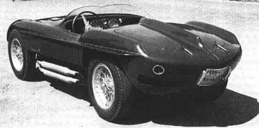
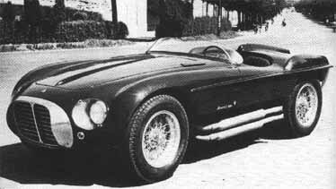
Maserati 3500GT Vignale Spider 1960-1964
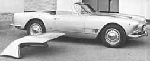
Vignale proposed (and advertised) a sleek updated version of the Maserati 3500GT in 1964; only a one-off was produced. Below you can view a copy of the Vignale advertisement and a photo of the real car.
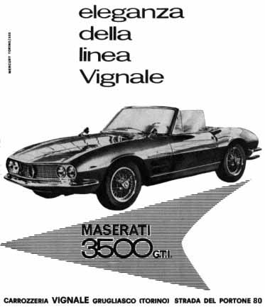
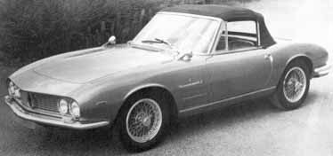
Maserati 5-liter Coupé
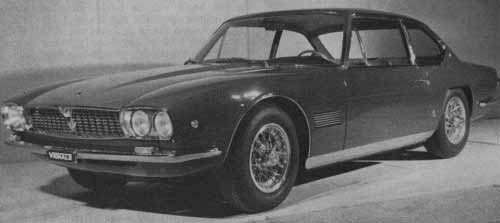
As shown at the Turin Motor Show, 1965.
Maserati Mexico
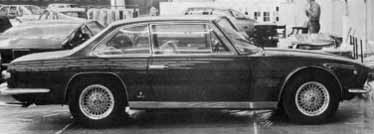
Produced from 1966 to 1968, with approximately 250 cars built.
1971 Maserati Mexico
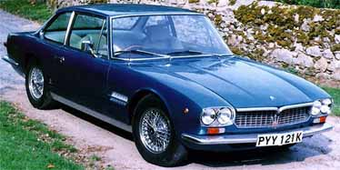
1971 Maserati Mexico two-door coupé, coachwork by Vignale. Registration no. PYY 121K, chassis no. 112471044, engine no. 112471044. Effectively the replacement for the six-cylinder 3500GT and Sebring models, and based on the Quattroporte saloon, Maserati’s new two-door, four-seater sports car debuted at the 1966 Turin Motor Show. Named later in honour of Cooper-Maserati’s victory in the 1966 Mexican Grand Prix, the Mexico sported elegant Vignale coachwork – a big improvement on Frua’s ‘ugly duckling’ Quattroporte. Maserati’s four-cam V8 was employed in 4.7-litre, 290bhp form for the newcomer; a more economical 4.2-litre version became available subsequently, good for around 220km/h. The Mexico had a live axle, disc brakes all round, a five-speed ZF gearbox as standard, and optional automatic transmission. Production ceased in 1973 after 250 cars had been built. The 1971 London Motor Show car, and one of only six Mexicos produced with right-hand drive, PYY 121K displays a recorded 77,000 miles and has been in the vendor’s hands since 1989. Benefiting from a comprehensive rebuild carried out between then and 1994 at a cost of approximately £40,000, the car is now in pristine condition. The restoration work included replacement of all corroded panels; bare-metal re-spray; inspection and re-wiring of electrics; replacement of brake calipers and pipes; fitting of a stainless-steel exhaust; re-Connollising of the leather upholstery; and installation of a complete new carpet set. The carburettors and valve clearances were checked and adjusted, and the engine is said to hold regulation oil pressure. Finished in Sea Blue metallic with a Bone interior, and equipped with manual transmission, it comes with a file of bills, paint and sundry other spares, a current MoT, and a Swansea V5. Perhaps the nicest example around.
Information from: Auctions-on-line
Maserati Indy
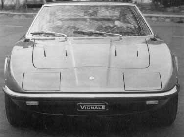
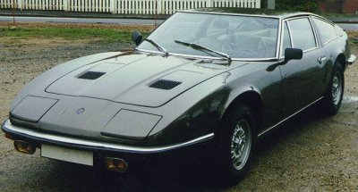
Numbers produced: 1,136. Years produced: 1969 to 1975. Engine: 4.7-litre V8. Power output: 320 hp. Top speed: 154 mph.
Maserati Sebring 3700 GTIS
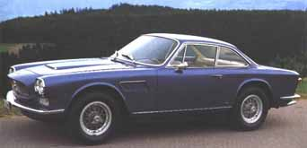
More Maserati/Vignale information at ‘Limited Cars’ and at Club Maserati.
Most images on this page thanks to Ivan Ruiz.